Sabores
| 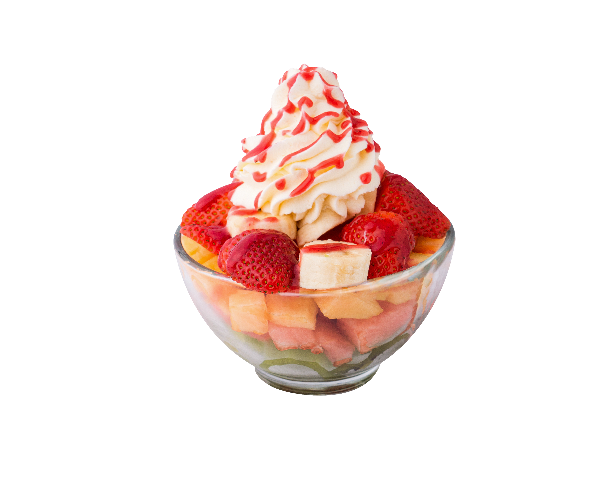FRUTAS: Algunos sabores comunes incluyen fresa, mango, piña y limón. |
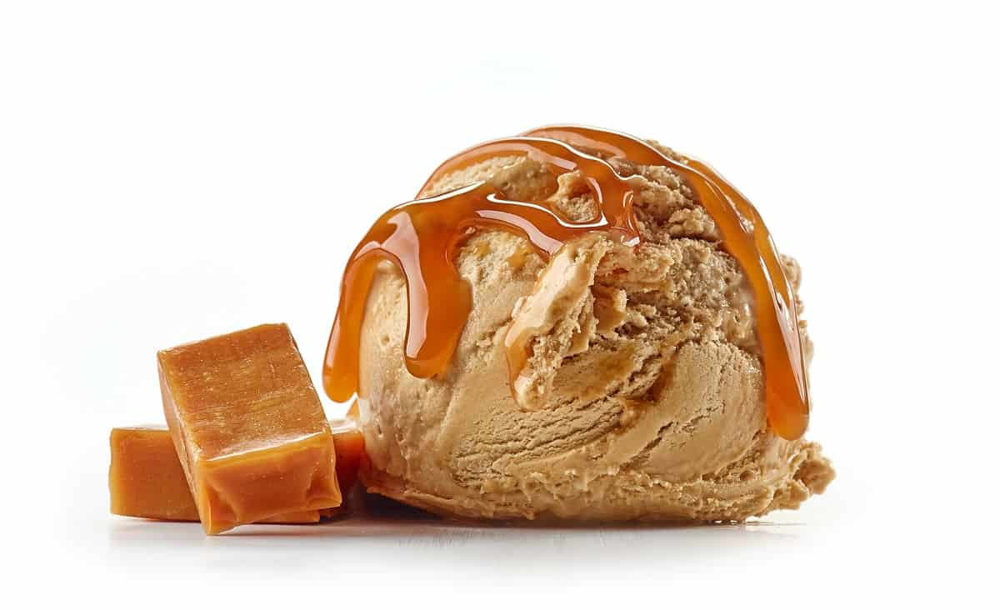DULCE DE LECHE: Este sabor de helado es muy vendido en todo el mundo. |
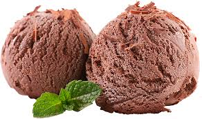CHOCOLATE: El helado de chocolate es uno de los sabores mas populares. |
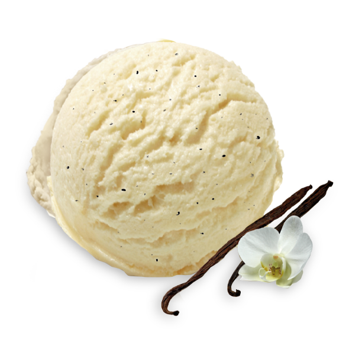VAINILLA: Otro sabor clásico y muy popular es el helado de vainilla. |
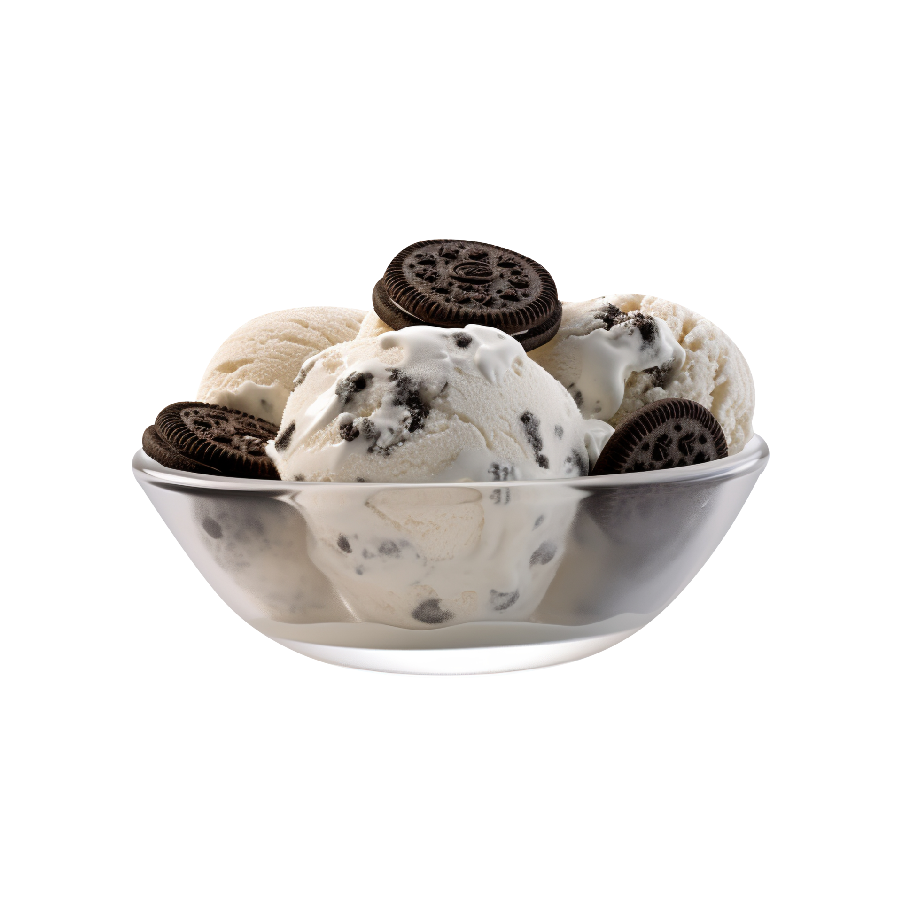OREO: El helado de crema Oreo es uno de los nuevos favoritos. |
 BROWNIE: El helado combina el delicioso sabor del brownie con la suavidad del helado. BROWNIE: El helado combina el delicioso sabor del brownie con la suavidad del helado. |
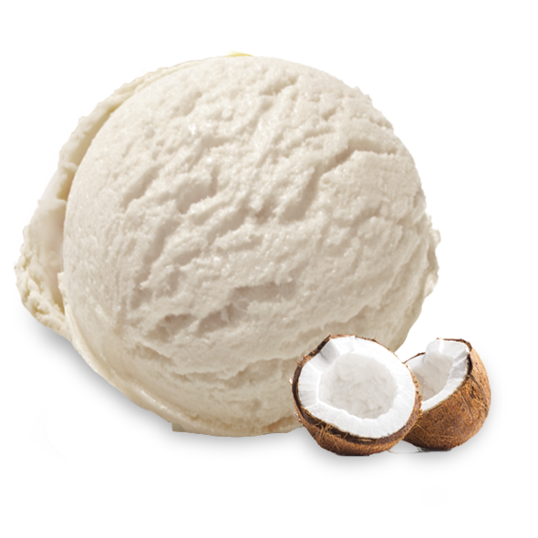COCO: El helado de coco es refrescante y tiene un sabor tropical muy agradable. |
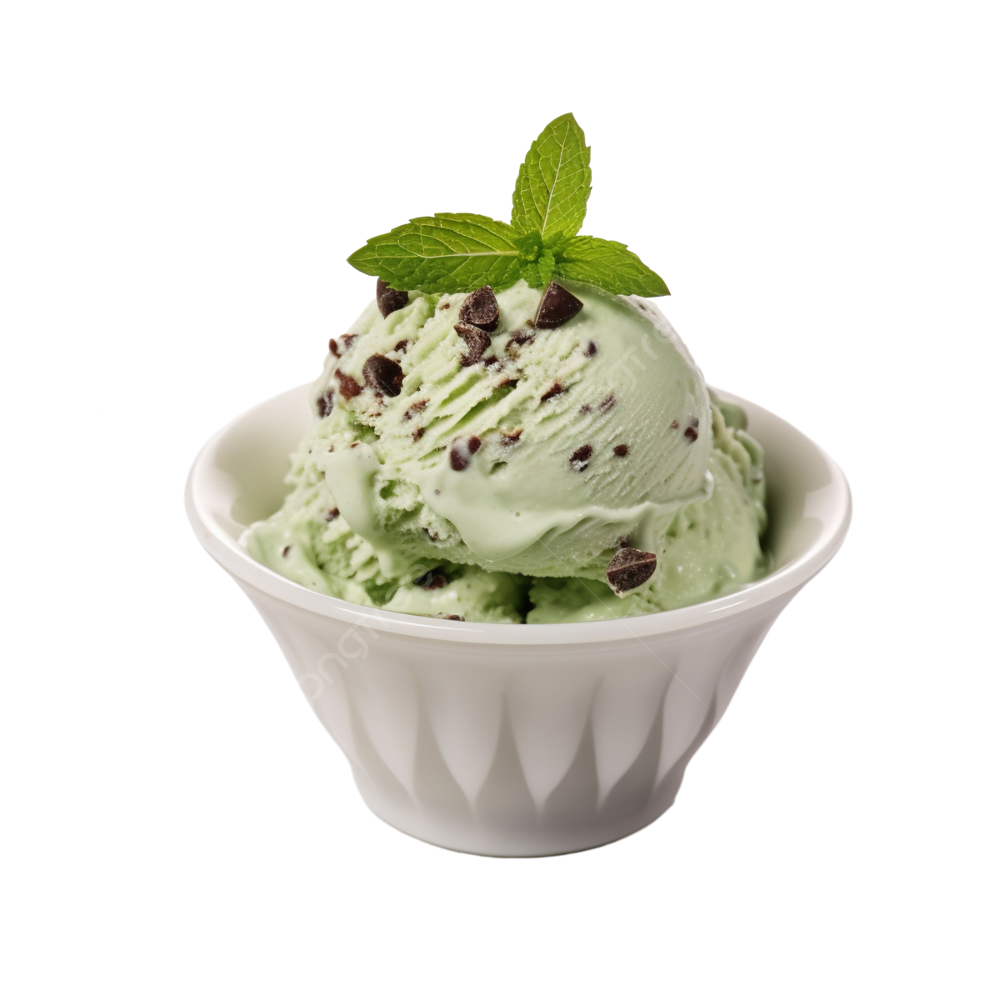MENTA: El helado de menta es refrescante y tiene un sabor único y refrescante. |
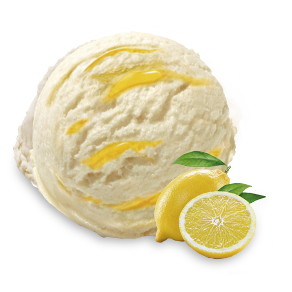LIMON: El helado de limon es ácido y refrescante, perfecto para los dias calurosos. |
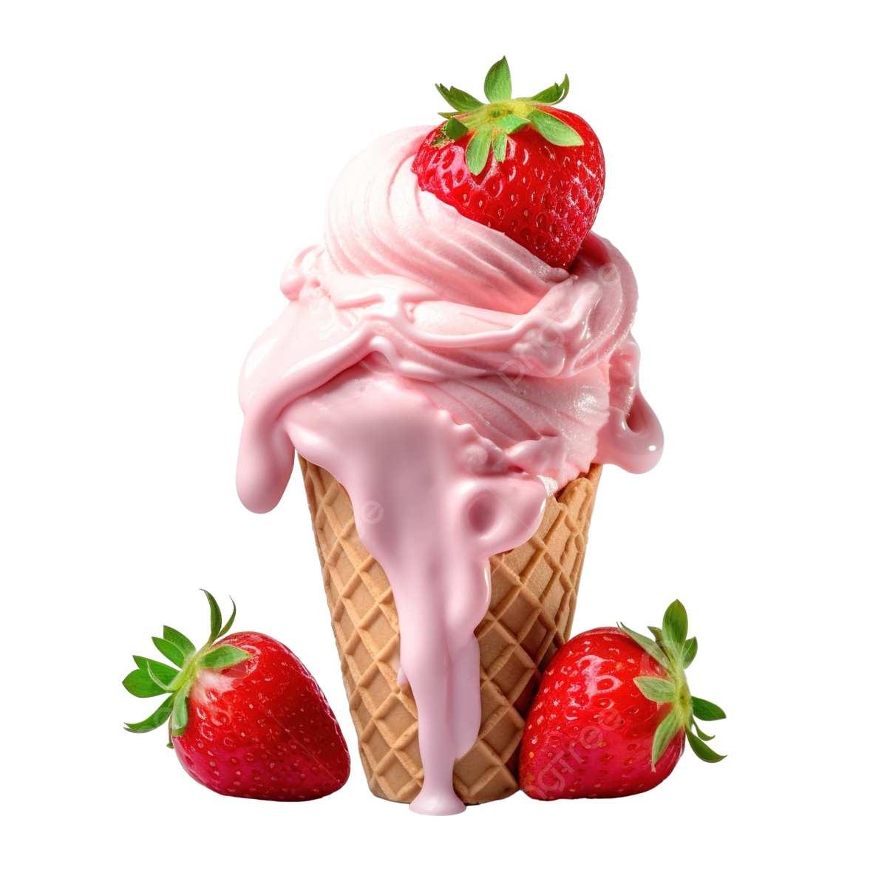FRESA: El helado de fresa es dulce y frutal, y es uno de los sabores clásicos mas populares. |
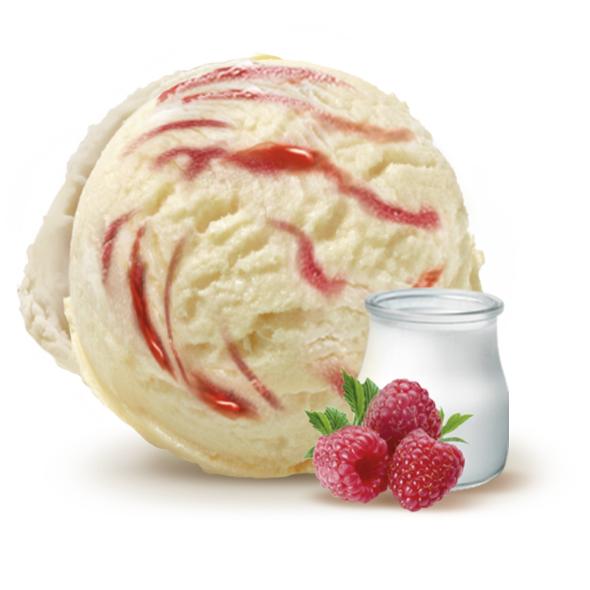YOGURT: El helado de yogurt es versátil y se puede personalizar agregando frutas frescas. |
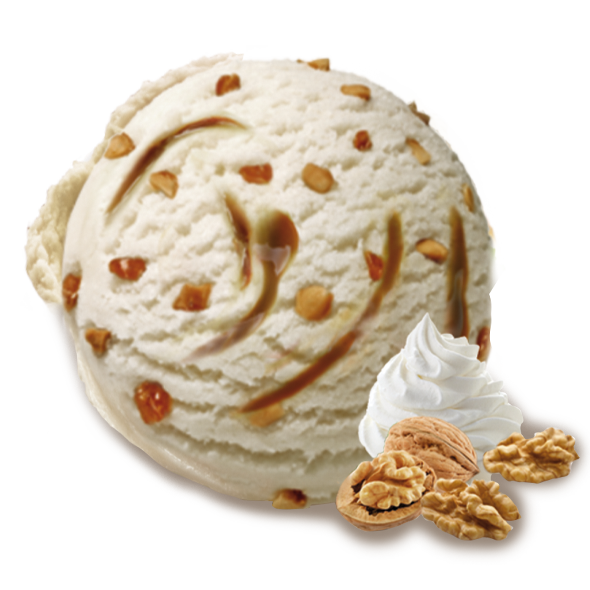NUECES: Combina la cremosidad del helado con el sabor y la textura de las nueces. |